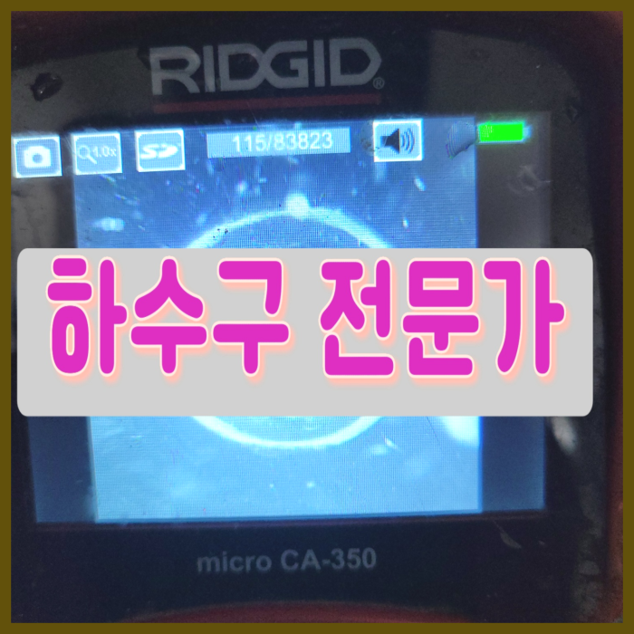
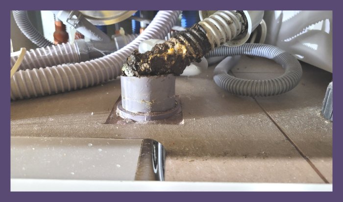
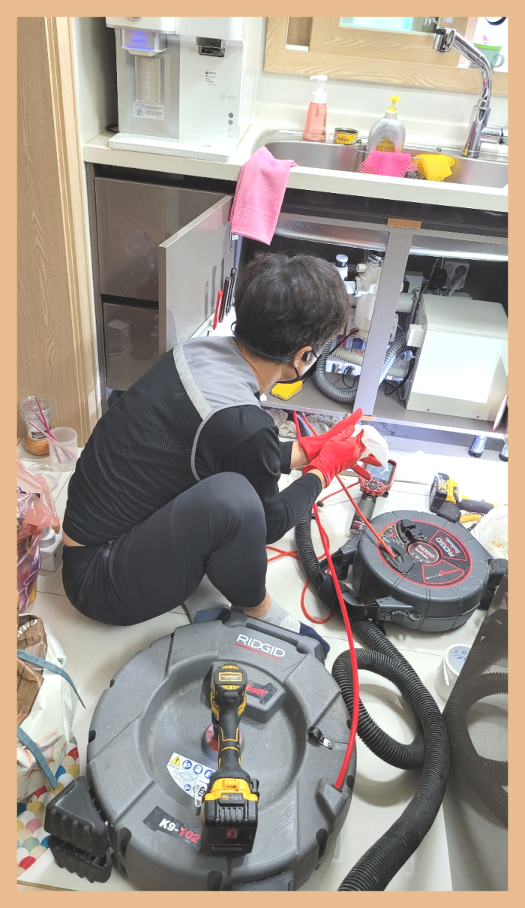
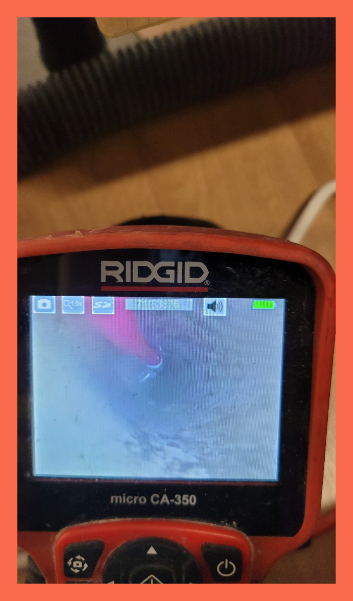
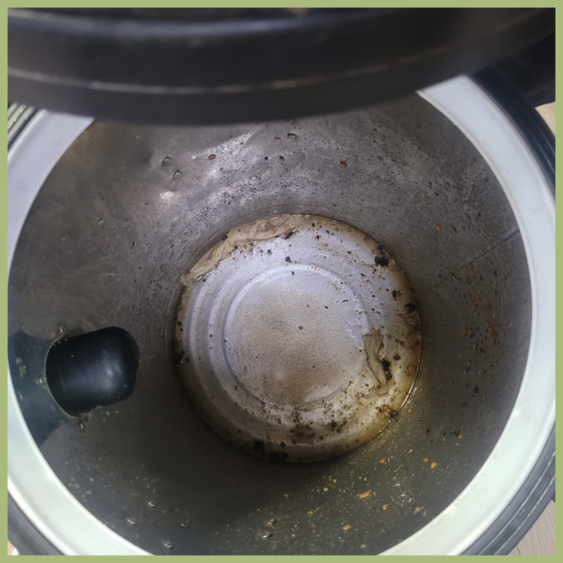
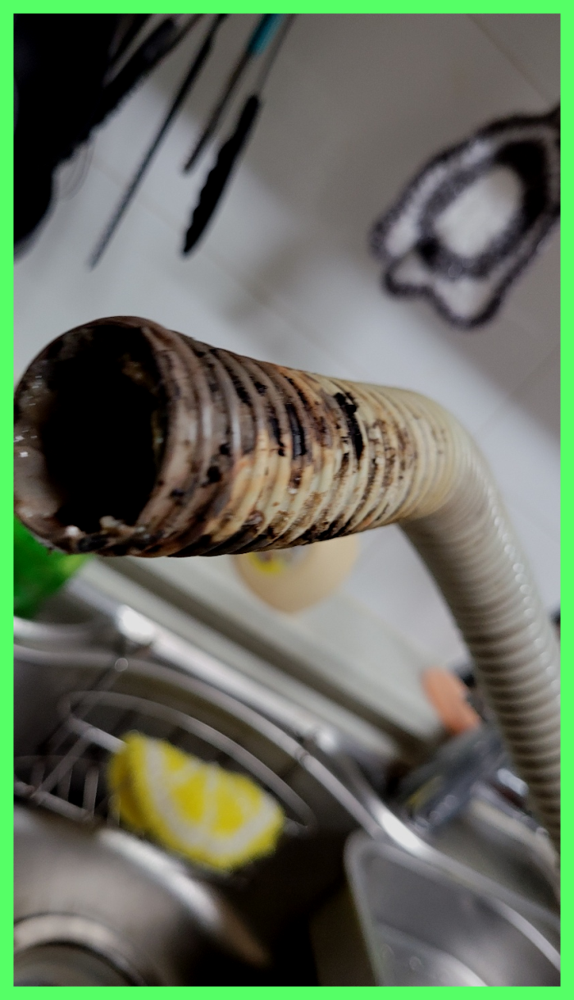
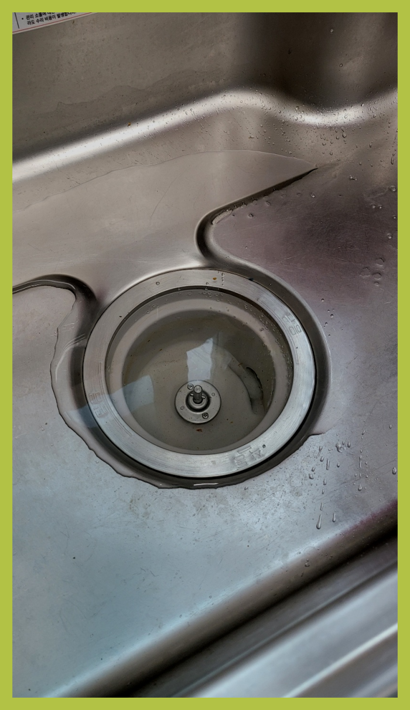

🏠 하남 감일동 싱크대배수관막힘 하수도역류 뚫음 설비업체
용인 싱크대막힘 전문 시공 후기

📋 작업 개요
- 위치: 용인
- 서비스 유형: 싱크대막힘, 변기막힘, 하수구막힘, 배관막힘, 누수수리, 역류해결, 뚫는업체, 배관청소, 고압세척, 설비공사
- 작업 일시: 2023. 12. 27. 0:43
- 업체명: 하수구수사대 (010-5615-2118)
🔍 문제 상황
안녕하십니까^^
설비전문업체 "하수구수사대"를 찾아주셔서 감사합니다.
배출관 막힘 상황에 따라 통수방식이 달라서 최신장비로 확실한 원인을 검수하고 진단하여 이에 맞는 적절한 장비를 택해 작업을 진행해야합니다.
하남 감일동 싱크대배수관막힘 하수도역류 뚫음 설비업체
주방에서 싱크대 하단을 살펴보면 싱크대 호스에 이물질이 쌓여 있을 수 있습니다. 이물질이 없다면 예상치 못한 문제로 인해 물이 흘러내릴 수 있으니 주의해야 합니다. 하수도를 뚫는 과정에서, 현장 경험이 부족하다면 불필요한 작업을 진행할 수 있으므로 주의가 필요합니다. 홀쏘를 이용한 청소 방법도 있으며, 비용을 고려한 후 수리를 진행합니다.

🔎 원인 분석
💡 전문가 진단: 하남 감일동 싱크대배수관막힘 하수도역류 뚫음 설비업체
배수구 구조를 확실히 이해하고 있어야만 작업 진행을 하기 전에 어떤식으로 작업을 할지 막히게 되었을지 간단하게 예상을 할 수도 있고 진행을 할때 이런 전문지식이 있어야 작업시간 단축에 큰 도움이 됩니다.
이번 현장에서 발생하는 것처럼 배관 배관 막혔을 시에는 한 군데만 막힌 것이 아니고 다방면으로 막혔을 가능성이 있기에 꼼꼼하게 점검해야 해요.
일상생활을 하다 보면 나도 모르게 어느 순간 막히게 되는 경험은 생각 이상으로 많아요. 우리 어떻게 관리를 하느냐에 따라 얼만큼 막혔는지 예상이 되지요. 집에서 꾸준히 청소를 해준다면 하수도한번 뚫고 나면 오래도록 사용이 가능해요.
내시경을 내려보니 하수막힘이 일어난 이유는 기름들이 가득 쌓이면서 물이 내려가기 어려운 통로 상태였는데요. 이러한 기름 슬러지들을 제거하기 위해서 배관에 플렉스 샤프트라는 장비를 사용해서 스케일링 작업을 진행하게 되었습니다.
불가피하게 공사가 커지지 않을 수 있도록 미연에 방지할 수 있기 때문입니다. 카메라를 조금씩 넣어 앞으로 전진하다 보니 무언가 꽉 막혀있는 물체가 있음을 직감하였습니다. 오래된 퇴수구 배관 같은 경우 거의 머리카락이 주된 원인이 되는 경우가 많습니다.

🔧 작업 과정
그동안 머리카락이 조금씩 배관을 따라 흘러내려가 배관을 막히게 했던 것 같고, 빨래나 기타 세척과정에서 나오는 이물질들 또한 배수배관으로 흘러내려가 켜켜이 쌓인 것이 원이 이 되었던 것 같습니다. 고객님께 상세하게 설명을 드리고, 이물질을 빼내는 작업을 시작하였습니다.
하수관 막혔다면 어떤상황이 발생할까요? 느리게물이흘러가거나 역류가발생하거나 누수가발생하게되는데요.이중에서 하나라도 보셨다면 확실히막힌것이에요
배출관 작업가능 기사가 소수이거나 지리적인한계가있다면 내방할수있는곳과 현장도착까지의시간에 제한이생기겠죠? 저희의경우는 전국여러지역에 뛰어난실력자인 배출관 베테랑들이 의뢰자분의 고민들을해결하고있어요. 계신곳이어디라도 방문할수있는시스템들을 갖추고있기에 불러주신다면 1시간내로 내방하고있습니다
이만큼의전문기계라면 단단한석회라도 뚫어버릴수있다고 장담가능한데요.막혀버린상황이되셔서하수기사를 찾고계신다면 가지고있는 장비들을 확인해보시는게 현명해요.싸게살수있는 기계가아니라서 다갖춰져있는데는 흔하지않죠.
전문기사의 실력으로 빠르게 고치실수있던것도 위와비슷한 문제때문에 증상이더 나빠지게됩니다.돈을아끼기위해서 할수있다면 배수뚫으실려고 하는생각들을 지양하셔야합니다.
다른회사는 재발생해서 다시연락해도 모르쇠하기도합니다.그렇게되어버린다면 비용이만만치 않아서 참담하실겁니다.이런 정직한데는 그리많지않아요.
배관막힘건으로 출동하는 경우는 음식점이나 카페 등의 업장이 가장 많으며, 가정집 욕실 배관 막힘으로 출동하는 경우도 빈번하게 있습니다.
전체적으로 막혀있던 배수관 배관의 관로를 뚫어냈으니 이제는 작업한 부분에 대해 고객님께 한번 보여드려야 하겠습니다. 배수관배관카메라를 투입해 확인을 해보면 말끔하게 처리가 되어서 물이 제대로 배수가 되는 부분까지도 확인시켜드렸습니다.


✅ 작업 완료
또한 시공이 필요한 지점도 관로 탐지기를 통해 발견, 사장님께 알려드렸습니다. 저희는 이처럼 작업의 규모를 가리지 않고 빠르게 출동하여 해결을 도와드립니다.
상황이 엉망인 상태에서 변기를 전혀 사용하지 못하고 있다면, 배출구전문설비업체를 불러 확인하고 수리를 맡겨보세요. 그게 최선의 방법입니다.
#하수구막힘 #하수구뚫음 #하수구역류 #씽크대막힘 #싱크대역류 #오수관막힘 #하수구청소 #욕실하수구막힘 #변기막힘 #하수구뚫는비용 #싱크대수리 #화장실막힘




⚠️ 베란다 누수 및 방수 관리 방법
- ✅ 비가 많이 올 때 창틀 주변이나 아래층 천장에 얼룩이 생기는지 정기적으로 확인해 보세요.
- ✅ 우수관 주변 실리콘 마감이 들뜨거나 깨진 틈새가 있는지 손상 여부를 수시로 체크하세요.
- ✅ 베란다 바닥 타일의 줄눈(메지)이 소실되면 그 틈으로 물이 침투하여 누수가 유발됩니다.
- ✅ 누수 의심 증상 발견 시 방치하면 아래층 손실이 커지므로 즉시 전문가의 진단을 받으십시오.
💡 핵심 정리
- 확실한 장비 작업(내시경 점검 및 샤프트 스케일링)으로 원인을 뿌리 뽑습니다.
- 작업 후 1년 이내에 동일한 부위 재발 시 100% 무상 A/S 서비스를 보장합니다.
- 서울 · 경기 · 인천 전 지역에 24시간 언제든 긴급 출동할 수 있도록 항시 대기 중입니다.
❓ 자주 묻는 질문 (FAQ)
🚨 용인 싱크대막힘 문제로 고민이신가요?
정확한 원인 진단과 확실한 시공으로 재발 없는 해결을 약속드립니다.
24시간 긴급 출동 | 서울 · 경기 · 인천 전지역 | 1년 내 재발 시 무상 A/S